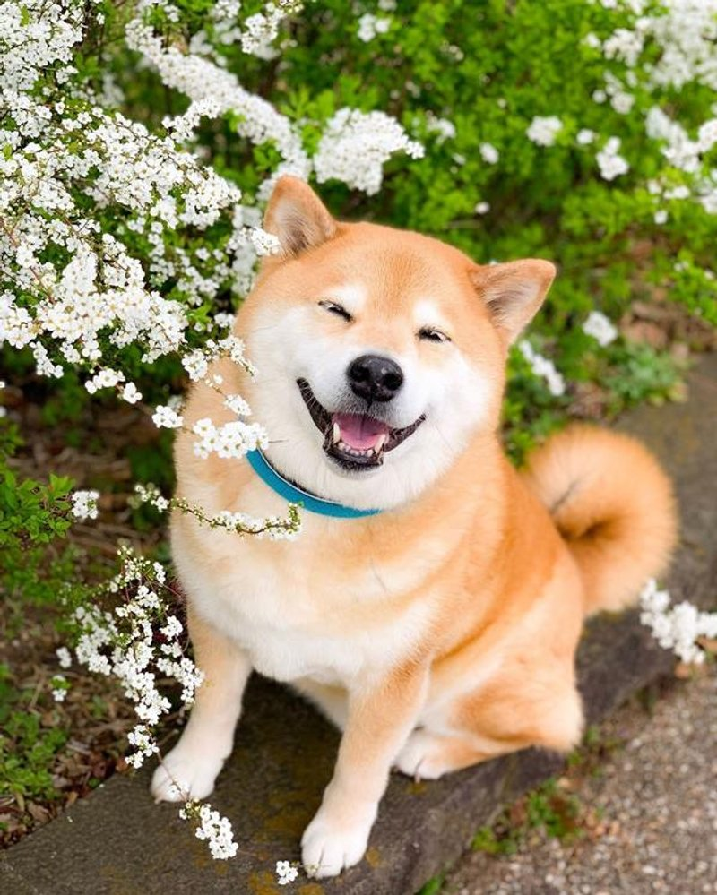

柴犬
外表
柴犬面貌與秋田犬相似，細分的話，秋田臉較柴犬圓，柴犬的耳朵與嘴較秋田尖，不過兩者最明顯的差別是體型，柴犬比秋田明顯嬌小。柴犬的特徵包括短毛、豎耳、捲尾等。屬小型犬，具有良好發展的肌肉。
柴犬有兩層毛，外層較堅硬直挺，裏層則較柔軟厚實。包括臉部、耳朵、身體和腿部皆為短毛。尾巴上的毛髮較長，並散開成叢狀。柴犬毛色一般為淺棕色、黑色、白色或胡麻色。柴犬一年換毛兩次。 柴犬的尾巴為卷尾，捲曲方向可能偏左、偏右，或沒有偏移。
性格
柴犬天性較為大膽、獨立，同時也有頑固一面。有些柴柴警戒心較強，也有些柴犬對人類較為友好，但基本上與日本犬的個性相同。柴犬對於主人或其認可的人類較為忠誠，由於柴犬在古代是作為追緝獵物的獵犬使用，因此通常具有一定警戒心與攻擊性，一般來說，母柴犬的攻擊性比公柴犬來得較為兇猛。柴犬與貓之間通常能夠和平相處。 柴犬個性固執，如果沒從幼犬開始飼養訓練，可能會成為頑固又愛耍脾氣的狗。 柴犬是一種相對自律的犬種，並經常喜歡保持自己身體的潔淨。柴犬經常會用舌頭清潔自己的腳掌和腿部。被飼養的柴犬通常能夠很快適應室內生活。
歷史
柴犬最早是被培育作為狩獵鳥類、昆蟲、兔子等小型動物的獵犬。即使有著試圖保存犬種的努力，但柴犬在第二次世界大戰期間因食物短缺和戰後犬瘟熱爆發而近乎絕種。後繼的柴犬都是由倖存下來的三種犬種培育而成，三種犬種分別為長野縣的信州柴犬、岐阜縣的美濃柴犬，以及鳥取縣和島根縣的山陰柴犬。
飼養注意事項
毛層、毛量多，換毛快、脫毛現象厲害，要勤加整理
食量較小，且胃口很挑
視網膜容易退化，到老年時甚至會忽然失明
容易因遺傳、眼瞼內翻等原因，導致睫毛倒插
